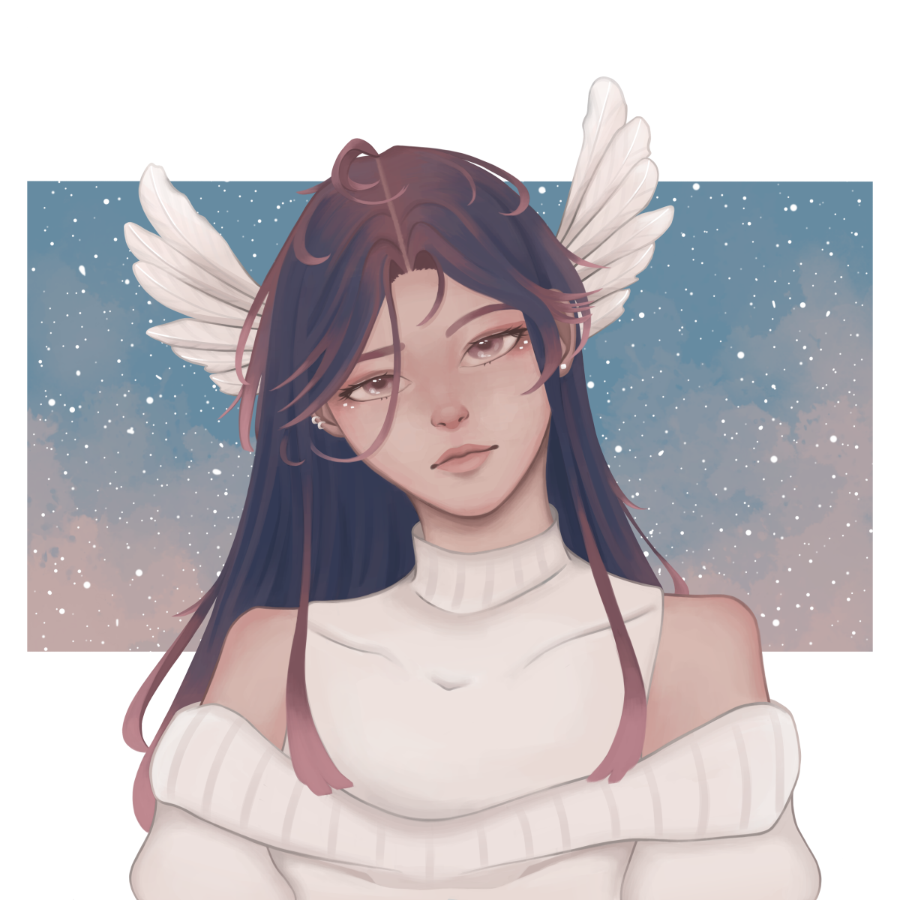
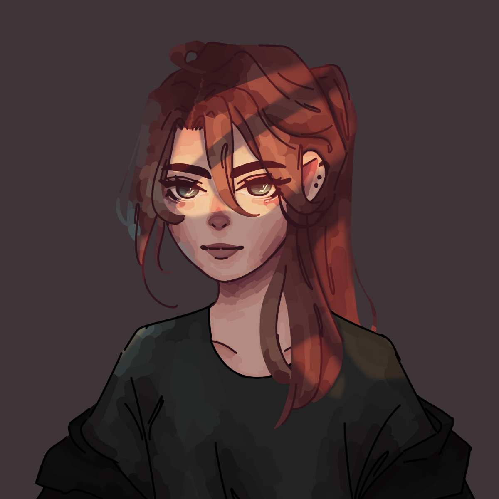
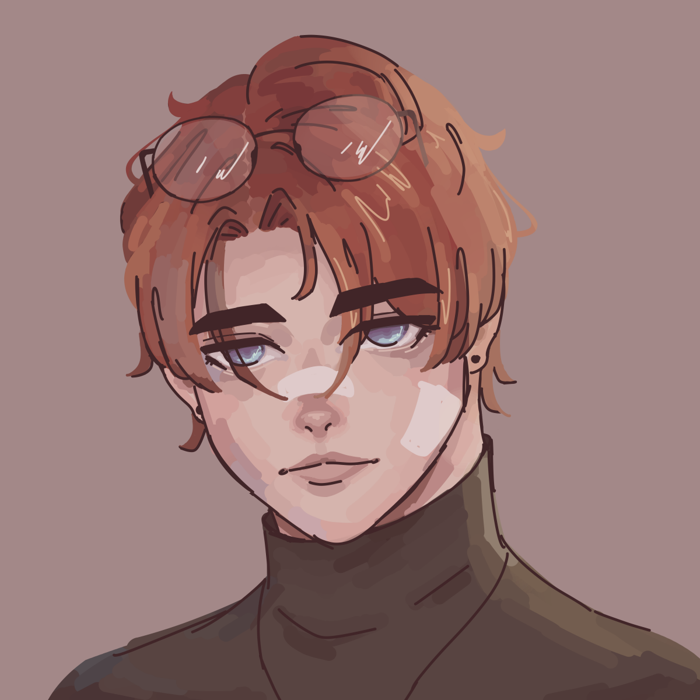
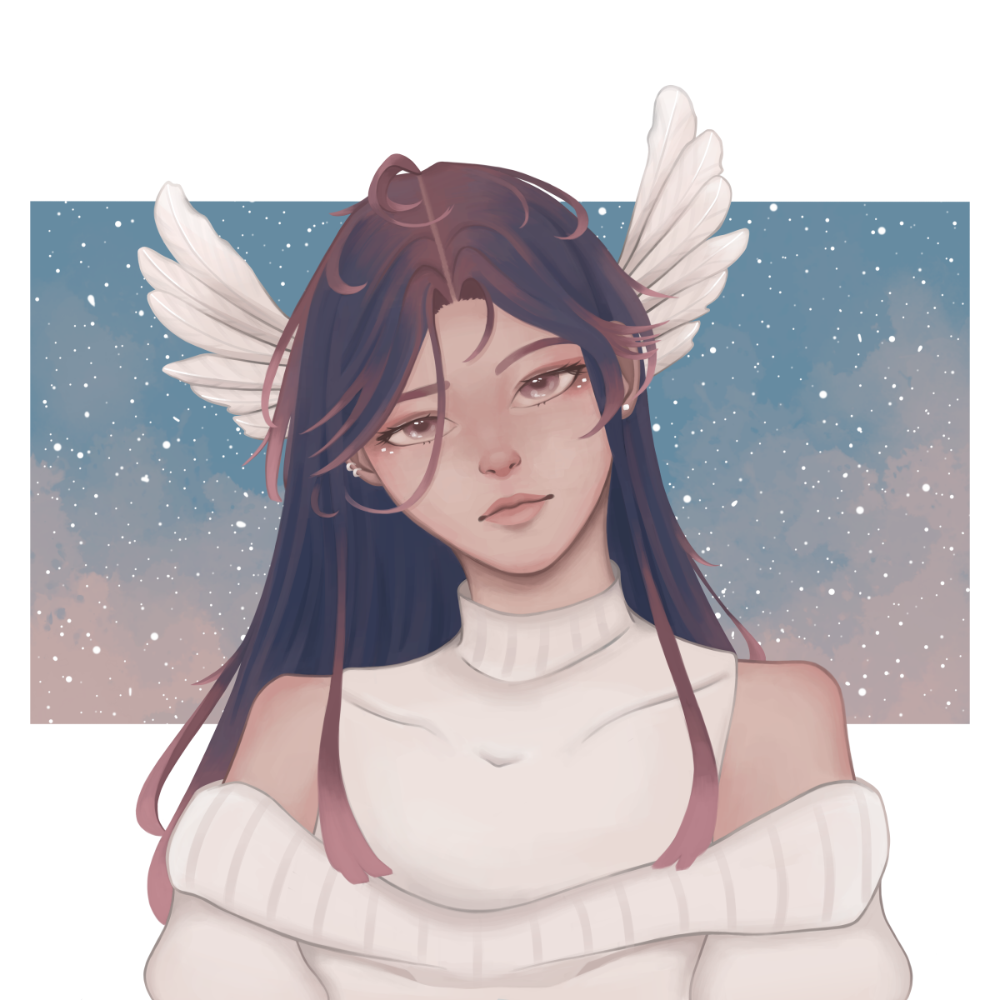
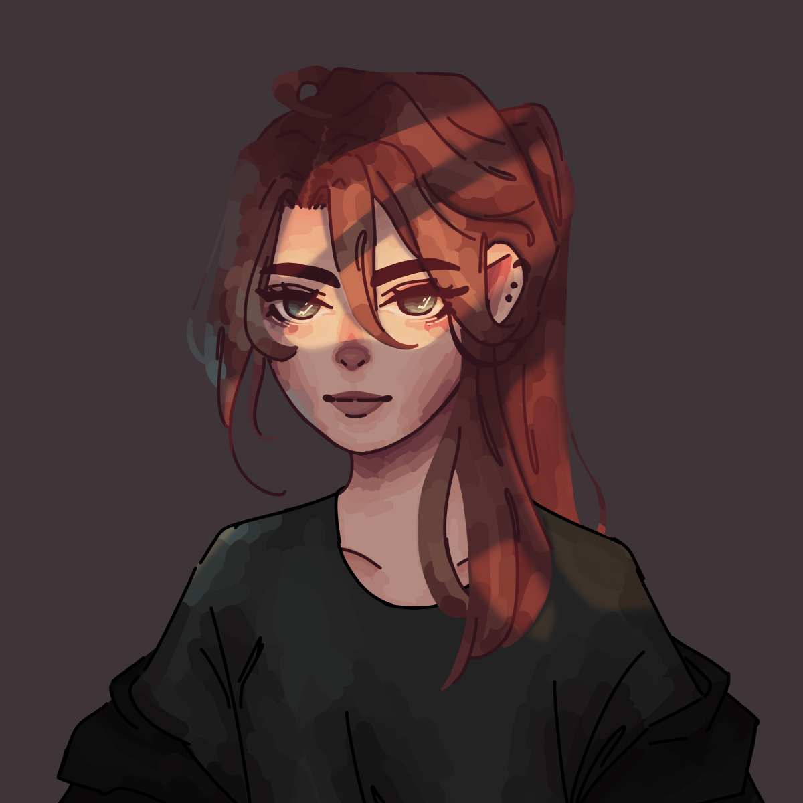
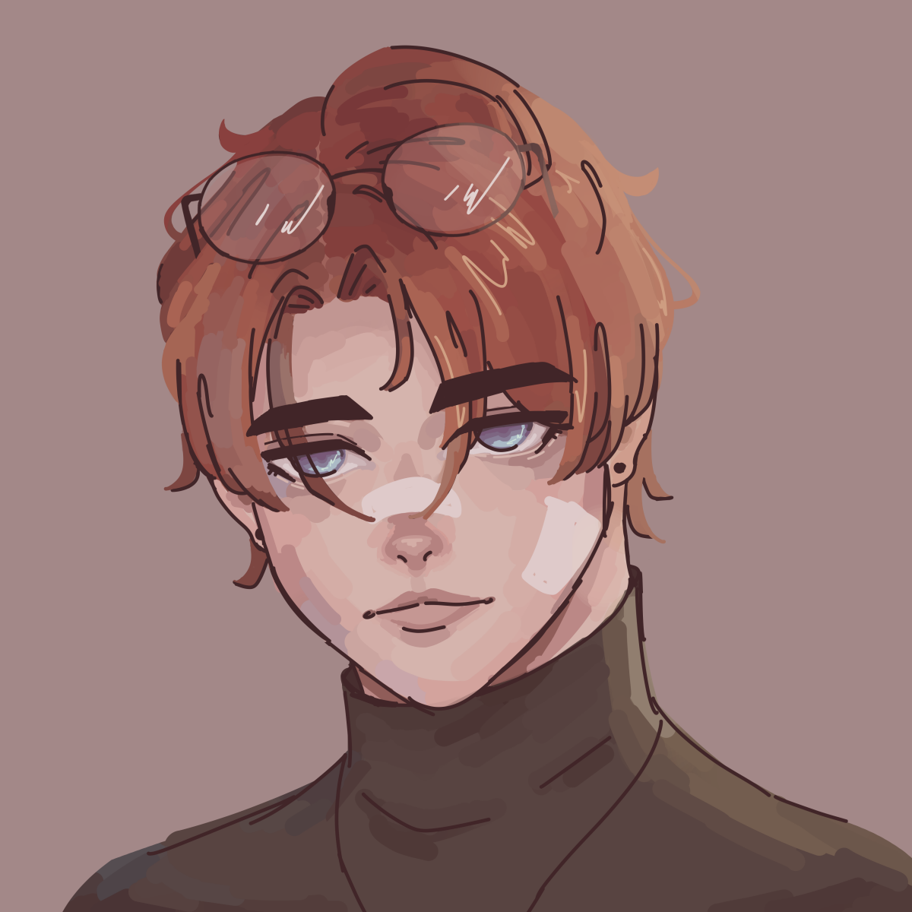

Projects
Game Development Projects
Fitch (In Progress)
Fitch is a 2D Metroidvania-style story adventure game where you play as a witch navigating through diverse environments, battling enemies, and utilizing the help of a fox companion that grants special powers.
This game is currently in early development as an independent passion project using Unity. Here’s the concept art for the main character, along with an idle animation.

Elementail (In Progress)
Elementail is a rogue-lite elemental-based 2D action platformer game where you play as a cat navigating through various levels and battling enemies. As the player progresses, they unlock different elemental abilities that change their playstyle, helping them prepare for platforming challenges and intense boss fights of varying difficulties.
The game is currently in early development as part of a collaborative project with a team of friends. We’re using Unity for game development and Aseprite for creating pixel art and animations. Here’s a sneak peek of the concept art for the main character, along with an idle animation that I’ve worked on.
Sntruggled (In Progress)
Sntruggled is a VR first-person shooter (FPS) zombie survival game where you and your stuffed animal friends fight off endless waves of toys. Use a variety of toy gun weapons, each with unique features, to decimate your enemies in this immersive, action-packed VR experience.
The game is currently in early development as part of a collaborative project with a team of friends. We’re using Unity for game development, Unity’s free assets for 3D models and animations, and Blender for customization. Although there isn’t much to show yet, I am actively involved in the controller movement, enemy AI, and overall game design.
2D Side-scroller Prototype
Created pixel art character movement animations and implemented basic controls in Unity with a fox sprite that follows the player.

2D Side-scroller Prototype
Built a 3D game environment and implemented player controls, shooting mechanics, and basic enemy AI.

Art Projects
Vee
An original pixel art character design and animation created in MediBang Paint, inspired by my personal aesthetic and personality.

Digi
An original pixel art character design and animation, created in MediBang Paint as a commissioned piece for my friend's original character.
Original Characters
 





Still-life Study
A traditional acrylic painting created from real-life objects, focusing on light, shadow, and texture.
The Crystarium
A traditional landscape painting of "The Crystarium" from the video game FINAL FANTASY XIV, created with acrylic paint.